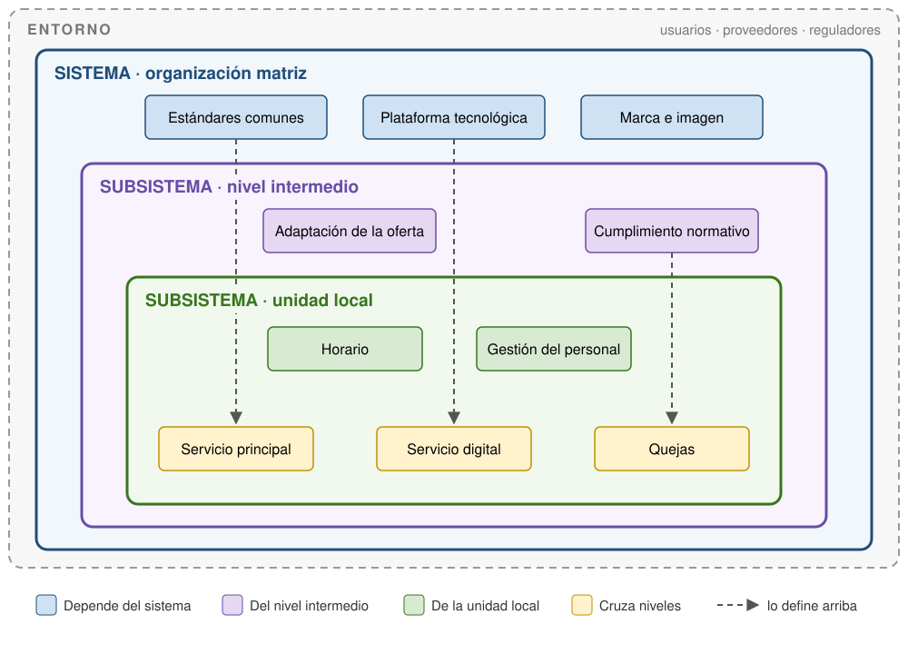

%%{init: {"theme": "base", "themeVariables": {"fontSize": "18px", "textColor": "#000", "edgeLabelBackground": "#ffffff"}}}%%
flowchart LR
subgraph NOR["LA NORMA"]
direction TB
ISO["ISO<br/>internacional"]:::norma --> CEN["CEN<br/>europeo"]:::norma --> UNE["UNE<br/>España"]:::norma
end
ORG["ORGANIZACIÓN"]:::org
subgraph CON["LA CONFIANZA"]
direction TB
IAF["IAF<br/>internacional"]:::confianza -- "4. reconoce" --> ENAC["ENAC<br/>España"]:::confianza
ENAC -- "4. acredita" --> CB["AENOR u otra<br/>certificadora"]:::confianza
end
NOR -- "1. publica<br/>la norma" --> ORG
ORG -- "2. la adopta y<br/>3. pide auditoría" --> CON
CON -- "3. concede el<br/>certificado" --> ORG
classDef norma fill:#cfe2f3,stroke:#1f4e79,color:#000
classDef confianza fill:#fff2cc,stroke:#bf9000,color:#000
classDef org fill:#d9ead3,stroke:#38761d,stroke-width:3px,color:#000
style NOR fill:#f2f7fc,stroke:#1f4e79,stroke-width:2px,color:#1f4e79
style CON fill:#fffaeb,stroke:#bf9000,stroke-width:2px,color:#8a6800
Los estándares de calidad
Distinción entre sistema y subsistema

Clasificad cada elemento según pertenezca a la Biblioteca Universitaria de Granada (BUG), a la Biblioteca del Colegio Máximo o a ambas:
- El Reglamento de la Biblioteca Universitaria
- Las normas de acceso y uso complementarias de la Biblioteca del Colegio Máximo
- El Sello de Excelencia Europea EFQM 600+
- El horario de apertura de la sala de lectura
- La carta de servicios
- La encuesta de satisfacción de usuarios
- Las quejas y sugerencias presentadas en el mostrador del Colegio Máximo
- Las estadísticas anuales de préstamo
Guardad vuestra clasificación: la retomaremos al final de la sesión.
Los estándares de calidad
La integración de sistemas TQM en las empresas es considerada como un indicio de la calidad del mismo. Sin embargo, para transmitir confianza a clientes y otras organizaciones externas, así como para homogeneizar procesos, las organizaciones acuden a entidades externas de validación de sus servicios.
Esto es lo que se conoce como la normalización de procesos mediante la creación de estándares o normas. Esto es, fijar un conjunto de requisitos comunes, acordados internacionalmente, con los que cualquier organización puede compararse.
Importante¿Qué es una norma o estándar?
Una norma es un documento elaborado por consenso y aprobado por un organismo reconocido, que establece reglas o características para un uso común y repetido.
Las normas tienen dos características esenciales:
- Son de carácter voluntario. Ninguna ley obliga a cumplir una norma o estándar. Su fuerza viene del mercado y de quien la exige (clientes, administraciones, convocatorias).
- Son fruto del consenso. La redacción viene dada por parte de expertos internacionales que forman comités técnicos para su diseño y aprobación.
Organizaciones responsables de emitir normativas y estándares
| Nivel | Organismo | Qué hace |
|---|---|---|
| Internacional | ISO | Elabora las normas en comités técnicos. La familia 9000 es del ISO/TC 176 |
| Europeo | CEN | Las adopta como normas europeas (EN) |
| Español | UNE (Asociación Española de Normalización) | Las publica en España como UNE-EN ISO |
La familia de normas que se centran en la gestión de la calidad es la familia UNE-EN ISO 9000.
AdvertenciaDistinción entre UNE y AENOR
En algunos trabajos se hablará indistintamente de AENOR y UNE. Sin embargo, desde 2017 operan como organizaciones distintas:
- UNE publica normas y estándares.
- AENOR certifica que las organizaciones cumplen con dichas normas.
La certificación de la calidad
Normalmente, una organización que cumple con el estándar en cualquiera de sus procesos querrá certificar dicho cumplimiento. Para ello, deberá buscar una entidad independiente que lo certifique.
El recorrido tiene cuatro pasos:
- ISO publica una norma. Por ejemplo, la ISO 9001, que establece qué requisitos debe cumplir un sistema de gestión de la calidad.
- Una organización la adopta. Decide organizar su gestión según esos requisitos. Para esto no necesita permiso de nadie ni ningún certificado: puede aplicar la norma sin certificarse nunca.
- La organización quiere demostrarlo. Decir “cumplimos la ISO 9001” no basta para generar confianza en usuarios, clientes o administraciones. Por eso pide a una entidad de certificación independiente (AENOR, Bureau Veritas, SGS…) que la audite. Si cumple los requisitos, la entidad le concede un certificado. Dura tres años, con auditorías de seguimiento cada año.
- Una entidad certificadora debe estar acreditada para constar como tal. Para ello, un organismo oficial que la evalúa y la acredita como competente para certificar. En España es ENAC. A su vez, ENAC forma parte de acuerdos internacionales (IAF), y por eso un certificado emitido en España es reconocido en otros países.
Así, cada nivel da confianza al siguiente: ENAC respalda a AENOR y AENOR respalda a la organización. ISO queda fuera de esa cadena: escribe las normas, pero no certifica a nadie.
TipAlcance de un certificado
Un certificado tiene siempre un alcance: qué parte de la organización y qué actividades cubre. Una organización puede certificar algunos de sus servicios y no otros.
La familia ISO 9000
Cuando se habla de “la ISO 9000” no se habla de una sola norma, sino de un conjunto de normas sobre gestión de la calidad que elabora el mismo comité de ISO (el ISO/TC 176). Cada una cumple una función distinta, y conviene tenerlas claras desde el principio:
| Norma | Qué es | Para qué sirve | ¿Certificable? |
|---|---|---|---|
| ISO 9000 | Fundamentos y vocabulario | Explica los conceptos y los principios de la gestión de la calidad. Es el diccionario de la familia | No |
| ISO 9001 | Requisitos | Exige: dice qué debe cumplir una organización para tener un sistema de gestión de la calidad | Sí, es la única |
| ISO 9004 | Orientaciones | Orienta a la organización que quiere ir más allá de los requisitos mínimos | No |
| ISO 19011 | Directrices de auditoría | Explica cómo auditar un sistema de gestión | No |
Por eso, cuando una organización dice que “tiene la ISO 9000”, lo correcto sería decir que está certificada con la ISO 9001: es la única de la familia que se puede certificar.
En esta sesión nos centramos en la ISO 9000; la 9001 y la 9004 son el contenido de la próxima.
Evolución de las normas ISO 9000
Las normas ISO se revisan periódicamente. La familia 9000 nació en 1987 y ha tenido seis ediciones. Algunas fueron simples retoques; otras cambiaron la forma de entender la gestión de la calidad. Estas son las importantes:
| Edición | Qué cambió | Qué significa |
|---|---|---|
| 1987 | Nace la familia. Había tres normas certificables, y la organización elegía una según lo que hacía: la 9001 si diseñaba y producía, la 9002 si solo producía y la 9003 si solo inspeccionaba el producto final | La calidad se entendía como control: demostrar, con documentos, que el producto cumplía lo pactado |
| 2000 | Las tres normas certificables se fusionan en una sola ISO 9001. La organización que no hace algo (por ejemplo, diseño) lo indica y queda exento de esos requisitos | La calidad pasa a entenderse como gestión: organizar el trabajo en procesos, pensando en el cliente y en la mejora continua |
| 2015 | Todas las normas ISO de gestión (calidad, medio ambiente, seguridad de la información…) adoptan la misma estructura de capítulos, para poder aplicarlas juntas. Se pide anticipar riesgos. Se reduce la obligación de redactar documentos | La calidad se integra en la gestión general de la organización, con menos papeleo |
| 2026 | Nuevas versiones de la ISO 9000 (mayo) y la ISO 9001 (septiembre). Las organizaciones certificadas tienen hasta 2029 para adaptarse | Más peso a la cultura de la organización y al comportamiento ético de la dirección |
Entre medias hubo revisiones menores: en 1994, en 2008 y una enmienda en 2024 que pide considerar el cambio climático.
NotaISO 9002 o la 9003
En bibliografía antigua aparecen las ISO 9002 y 9003. Son las normas de 1987 que desaparecieron en el año 2000, al fusionarse en la 9001. Existe una ISO/TS 9002:2016, pero no tiene nada que ver: es una guía para aplicar la ISO 9001 y no se puede certificar.
Los 7 principios de la gestión de la calidad
| Principio | En una frase |
|---|---|
| 1. Enfoque al cliente | Entender y satisfacer las necesidades de los usuarios, presentes y futuras |
| 2. Liderazgo | La dirección marca el rumbo y crea las condiciones para lograr los objetivos |
| 3. Compromiso de las personas | Personas competentes, implicadas y con capacidad de decisión en todos los niveles |
| 4. Enfoque a procesos | Gestionar actividades interrelacionadas como procesos que forman un sistema |
| 5. Mejora | Mejorar de forma continua, no solo corregir errores |
| 6. Toma de decisiones basada en la evidencia | Decidir a partir del análisis de datos e información |
| 7. Gestión de las relaciones | Gestionar la relación con proveedores, socios y otras partes interesadas |
En 2015 los 8 principios anteriores se redujeron a 7: el “enfoque de sistema” se integró en el enfoque a procesos.
Pregunta: ¿Qué principio conecta directamente con el trabajo de un documentalista?*
Conceptos clave
Definiciones simplificadas a partir de ISO 9000. Para la definición exacta, consultad la norma.
| Concepto | Qué significa |
|---|---|
| Calidad | Grado en que las características de un producto o servicio cumplen los requisitos |
| Requisito | Necesidad o expectativa, ya sea declarada, implícita u obligatoria |
| Parte interesada | Persona u organización que puede afectar a una decisión, verse afectada por ella o percibirse afectada |
| Proceso | Conjunto de actividades que transforman entradas en salidas |
| Sistema de gestión de la calidad | Parte del sistema de gestión de la organización que se ocupa de la calidad |
| Alcance | Límites del sistema: qué parte de la organización y qué actividades cubre |
| Información documentada | Información que la organización debe controlar y mantener, y el medio que la contiene |
| Eficacia / eficiencia | Lograr lo planificado / relación entre el resultado y los recursos empleados |
| No conformidad | Incumplimiento de un requisito |
Fijaos en la conexión con el Tema 1: un proceso con entradas y salidas es un sistema, y el alcance es su frontera con el entorno.
Tareas
- La experiencia de la BUG
- Moreno Pascual, L. (2016). El proceso de evaluación según el modelo EFQM: experiencia en la Biblioteca Universitaria de Granada. Boletín de la asociación andaluza de bibliotecarios, 31(112), 84-100.
Objetivo. Pasar de los principios abstractos de la ISO 9000 a evidencias concretas, distinguiendo qué corresponde a la organización y qué al punto de servicio.
Instrucciones.
Localizad la documentación pública de calidad de la BUG (memorias EFQM, carta de servicios, política de calidad, resultados de encuestas) y la específica de la Biblioteca del Colegio Máximo (normas complementarias, información en la web, carteles, lo que observéis en persona).
Para cada uno de los 7 principios, buscad una evidencia concreta. Si no la encontráis, indicadlo: la ausencia también es un resultado.
Recogedlo en una tabla en el repositorio del caso práctico:
Principio Evidencia Fuente Nivel (BUG / Colegio Máximo / ambos) ¿Se aplica o solo se declara? La columna Nivel es obligatoria. Usad la pregunta de control: si cerrara el Colegio Máximo, ¿esto seguiría existiendo?
En vuestra página individual del wiki: ¿qué principio os ha costado más situar en un nivel y por qué?
Entrega. Commit al repositorio antes de que acabe la clase.